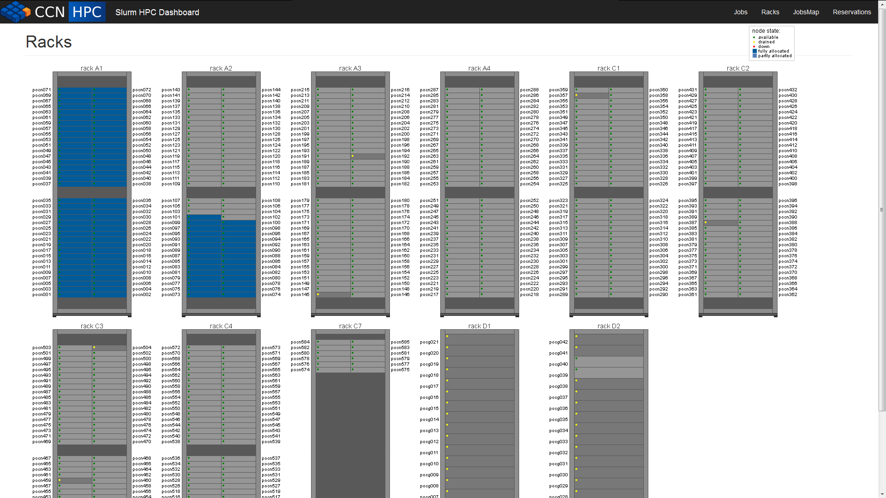
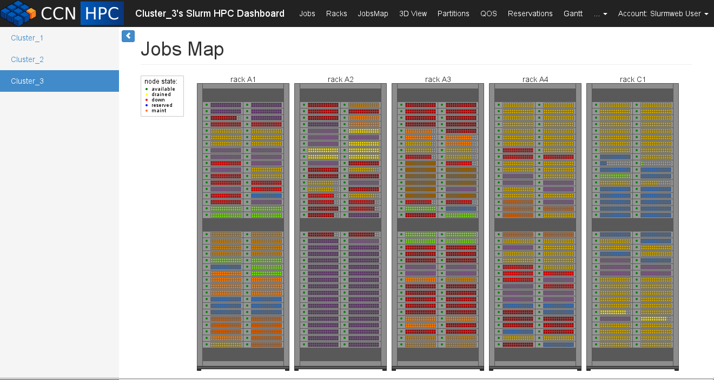

Introduction¶
Slurm-web is web application that serves as web frontend to Slurm workload manager. It is based on 3 components:
- a backend REST API
- a dashboard web GUI
- a small server for dashboard’s configuration files
The role of the API is to serve raw runtime data about a system (typically a supercomputer) running Slurm. All data are delivered in common and standard JSON format. This backend API is developed in Python programming language.
Please refer to Reference API for complete REST API reference documentation.
The role of the dashboard is to show to users, administrators and decidors all supercomputer runtime data in a graphical and attractive way. It is a web GUI that aims to be user-friendly, beautiful and clean. The dashboard is developed in HTML and Javascript. It is designed to be used with any modern web browser with fairly decent support of HTML5, Javascript and CSS.
Please refer to usage guide for complete GUI usage instructions for users.
Here are some screenshots of the Slurm-web dashboard web GUI.
Jobs view:

Racks view:
{kind=link}
JobsMap view:
{kind=link}
3D view:

Partitions view:

QOS view:

Reservation view:

Please refer to software architecture section for more detailed description of components inner working and integration.
A small HTTP server implemented with Flask has been added to serve files used for dashboard configuration from the directory /etc/slurm-web/dashboard
Please refer to the dedicated section in installation to know more about how to configure your dashboard.